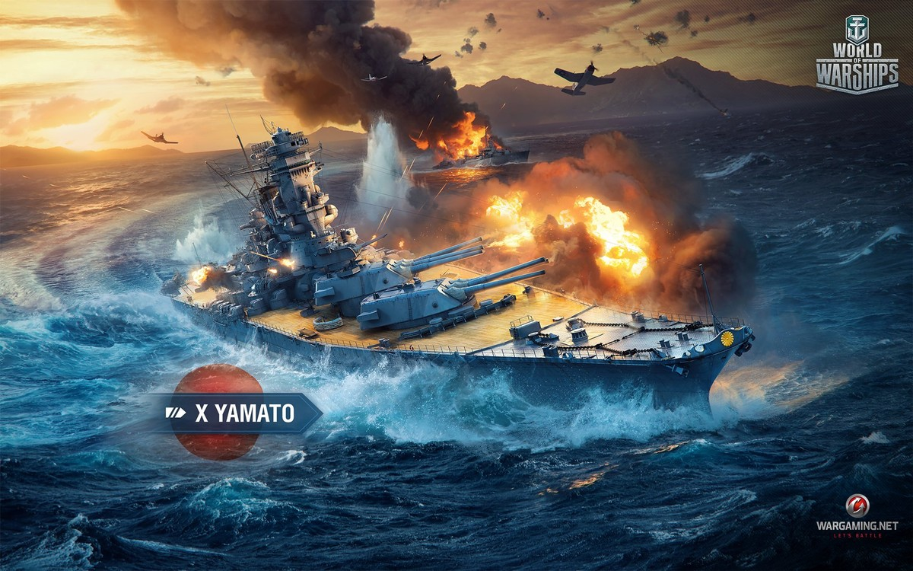

Yamato miał być postrachem mórz, największym okrętem świata i biczem na Amerykanów.
Budowę planowano od połowy lat 30. XX wieku, a dwa pierwsze z trzech okrętów typu zwodowano w roku 1940.
Yamato i Musashi porażały wielkością, wypierając ponad 70 tys. ton. Taki tonaż osiągnęły dopiero w połowie lat 50. amerykańskie lotniskowce typu Forrestal.
Miały długość 265 m, szerokość 39 m i zanurzenie 10,5 m. Dodatkowo miały dziewięć potężnych dział kalibru aż 46 cm!
Ich kariera bojowa była jednak krótka i mało emocjonująca – służyły jako straszak na Amerykanów, stąd wysyłano je w zagrożone rejony.
Wzięły udział jednak w zaledwie dwu bitwach: pod Leyte, gdzie zatonął Musashi i pod Okinawą, gdzie zatopiono Yamato.
Jedyny raz, kiedy otworzyły one ogień do wrogich okrętów miał miejsce właśnie pod Leyte, gdzie prawdopodobnie trafiły one jeden z amerykańskich lekkich lotniskowców. Wobec strat w lotniskowcach anulowano budowę dwu kolejnych, a Shinano, pozostający na pochylni, przebudowano na okręt lotniczy. Także on padł ofiarą Amerykanów i to zanim jeszcze zdążył wejść do walki.
